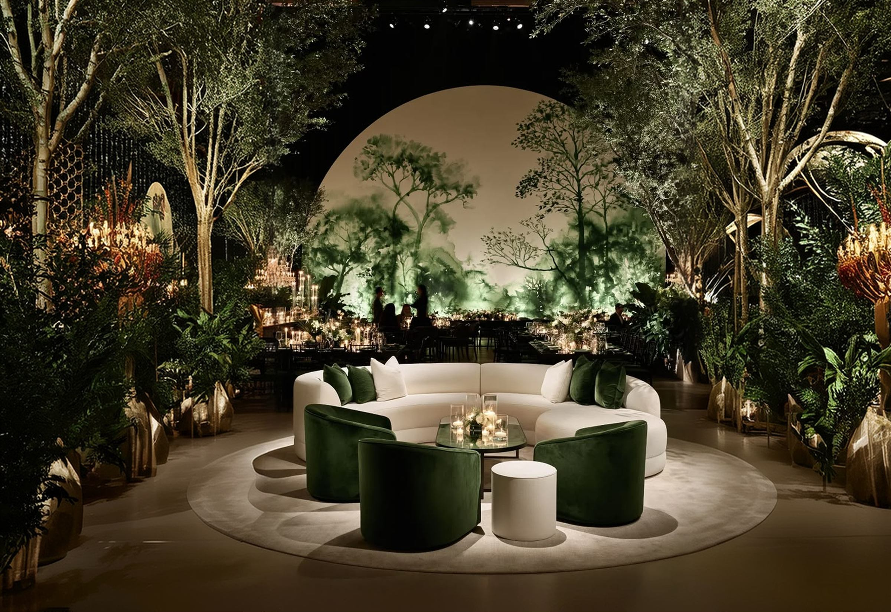
Brand identity & guidelines
Yamor
Overview
More than planning — we craft moments into masterpieces.
YAMOR is a luxury event planning brand dedicated to elevating celebrations and crafting unforgettable, high-end experiences. The identity is built around understated luxury: sophisticated typography, a refined organic palette and elegant botanical details that carry from the logo to every invitation, card and post.
- Logo & brandmarks01
- Colour palette02
- Typography03
- Illustrations & pattern04
- Stationery & social media05
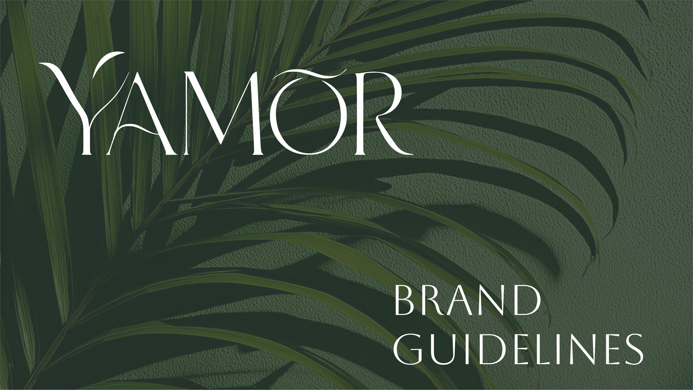
The Logo
A custom logotype drawn from the brand name itself. Sweeping, leaf-like strokes on the Y and the Ō give the letters a botanical lightness, so the mark reads clearly and directly conveys the brand’s identity and values.
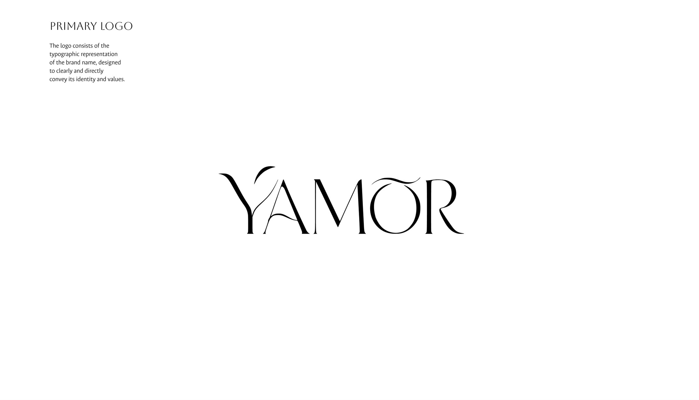
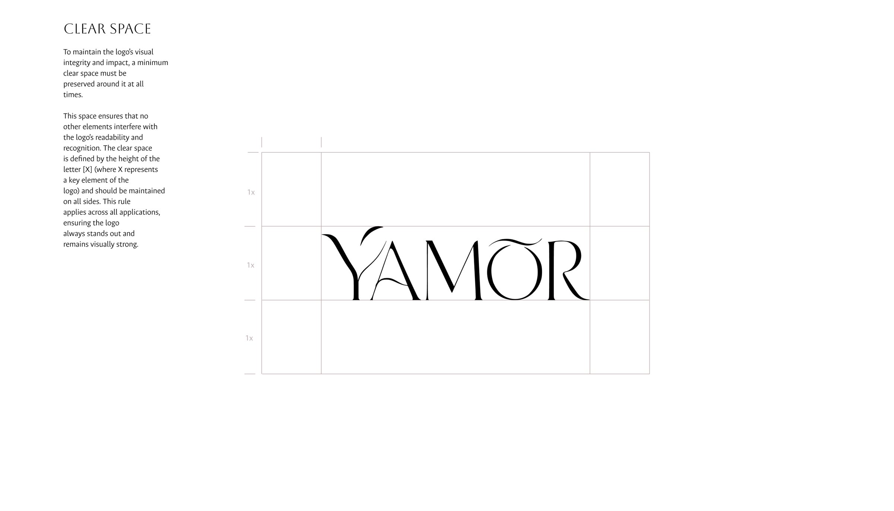
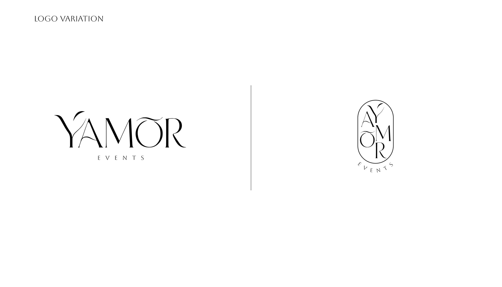
Clear space
A minimum clear space — equal to the height of the letter X — is kept on all sides, so no other element interferes with the logo’s readability and it always stands out.
Usage rules
The logo is never rotated, stretched, given gradients or shadows, or set in colours outside the palette — keeping every application consistent.
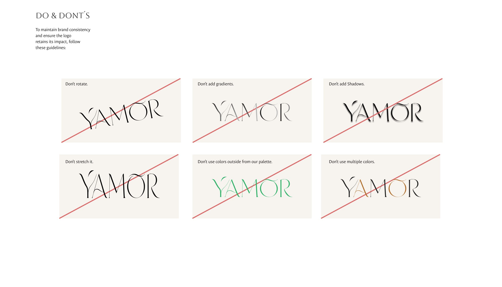
Colour Palette
Five tones drawn from candlelit tables, deep wine and fresh greenery. Sage Green leads, Burgundy and Terracotta add warmth, and Blush and Ivory keep everything soft and luminous.
One mark, every mood
01 / 06Brandmarks
Beyond the logotype, two marks extend the identity to every size and surface.
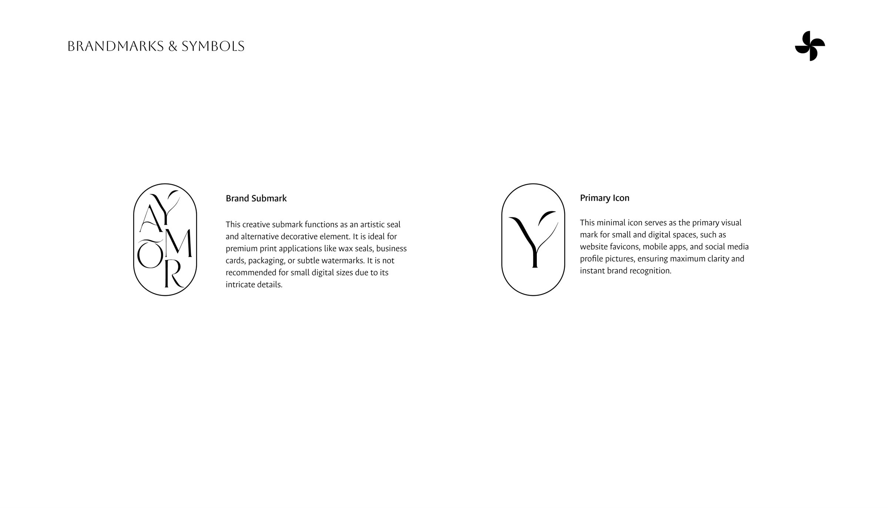
Brand submark
An artistic seal and decorative element for premium print — wax seals, business cards, packaging and subtle watermarks. Its intricate details are reserved for larger sizes.
Primary icon
A minimal Y for small and digital spaces such as favicons, apps and social profile pictures, ensuring maximum clarity and instant recognition.
Typography
A pairing of artistic display capitals and a versatile sans-serif — one for presence, one for clarity.
AB
ABCDEFGHIJKLMNOPQRSTUVWXYZ 0123456789
An artistic, all-caps typeface with refined, light strokes that embody understated luxury. Reserved for the logotype, headlines, premium event names and key brand statements.
Aa
A complete range of weights for subheadings, body text, event details and editorial layouts, ensuring maximum legibility.
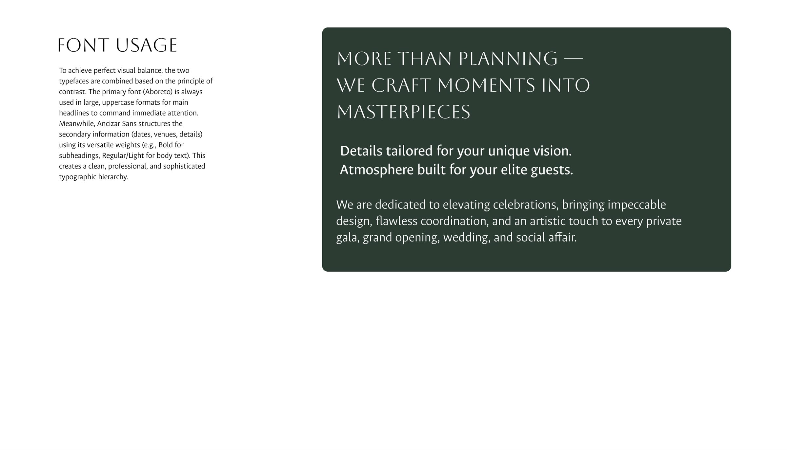
Illustrations & Pattern
A hand-drawn line illustration set — toasting glasses, candles, florals and fruit — brings warmth and a personal touch, while monogram patterns wrap cards, packaging and backgrounds.
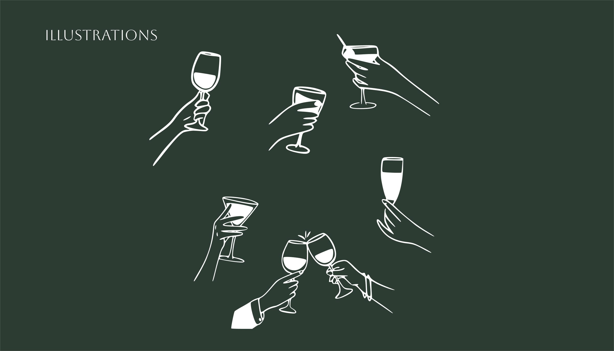
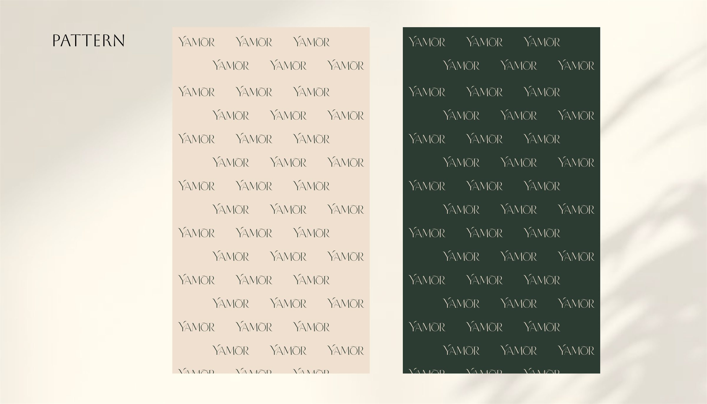
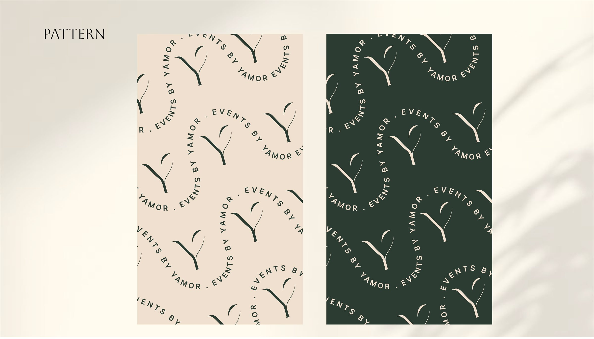
Applications
From thank-you cards and stationery to a curated Instagram presence, every touchpoint carries the same quiet elegance.
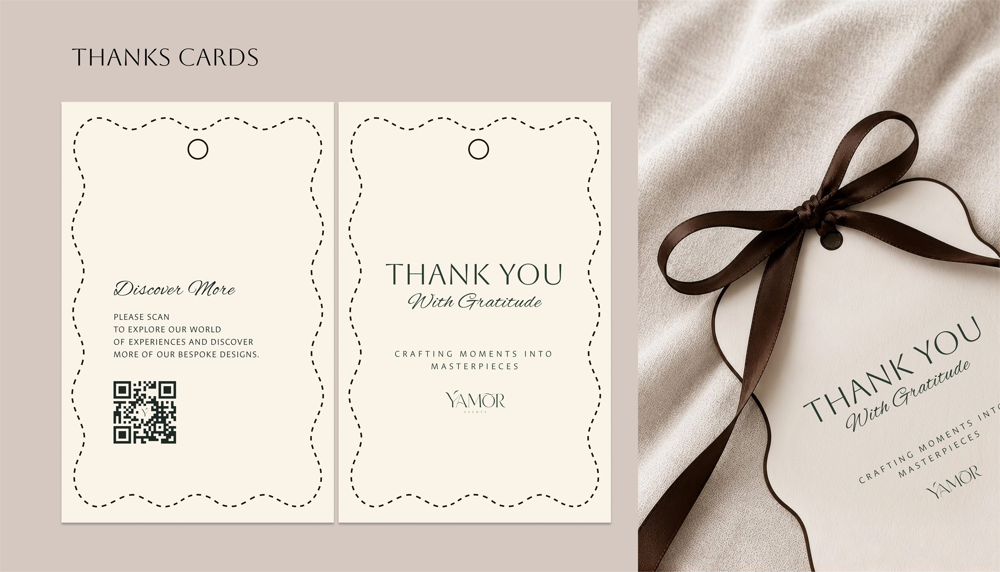
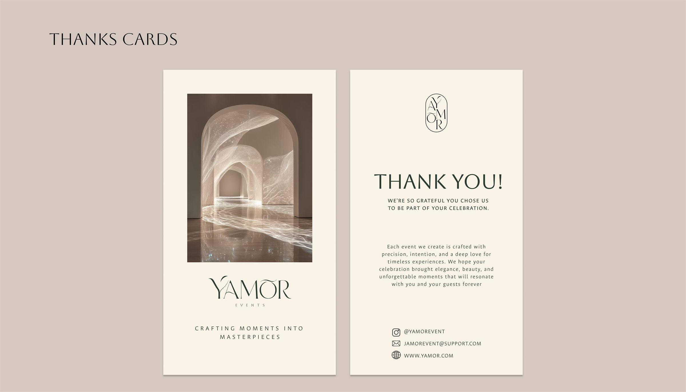
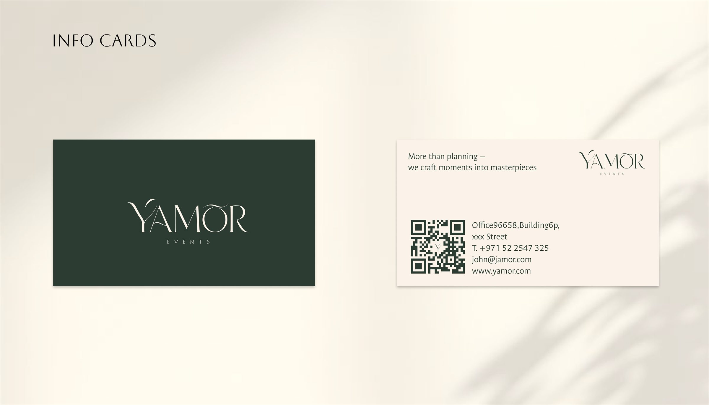
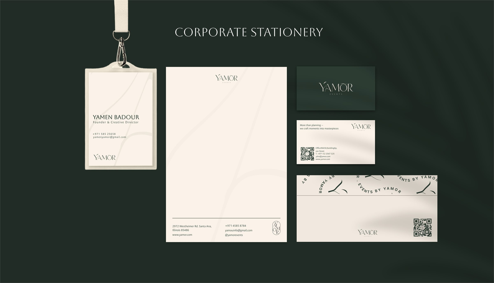
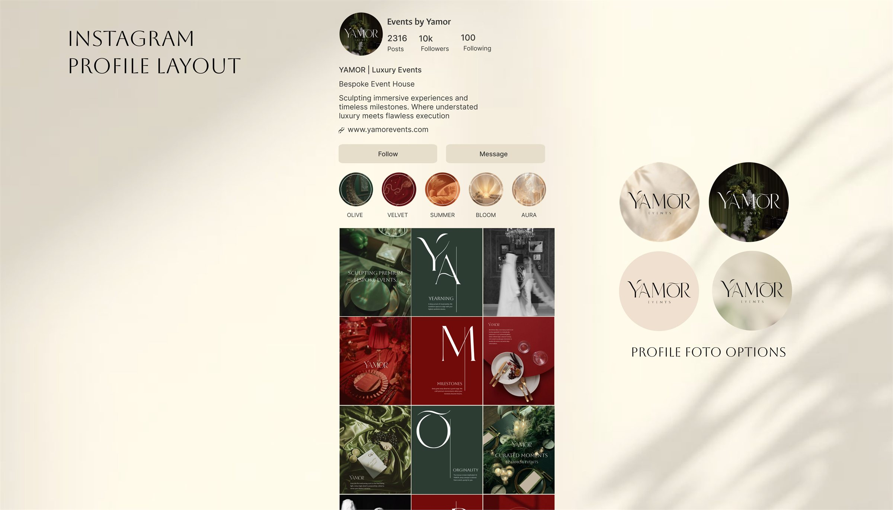
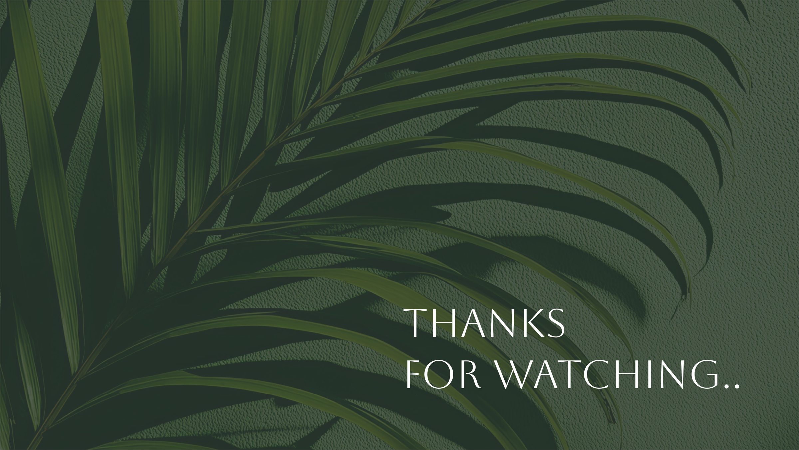
Next project